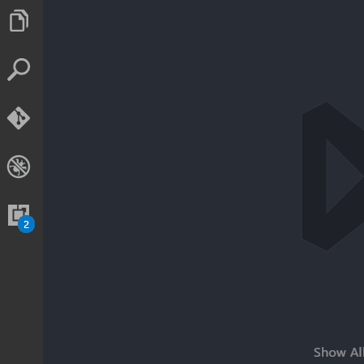
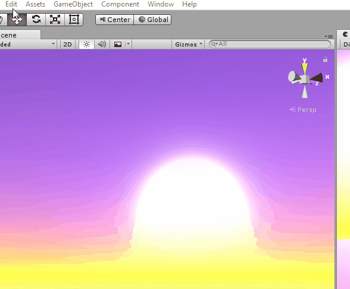
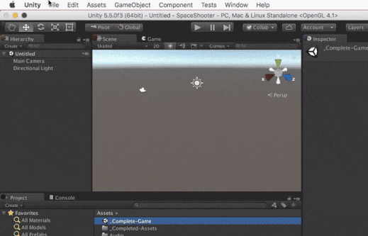
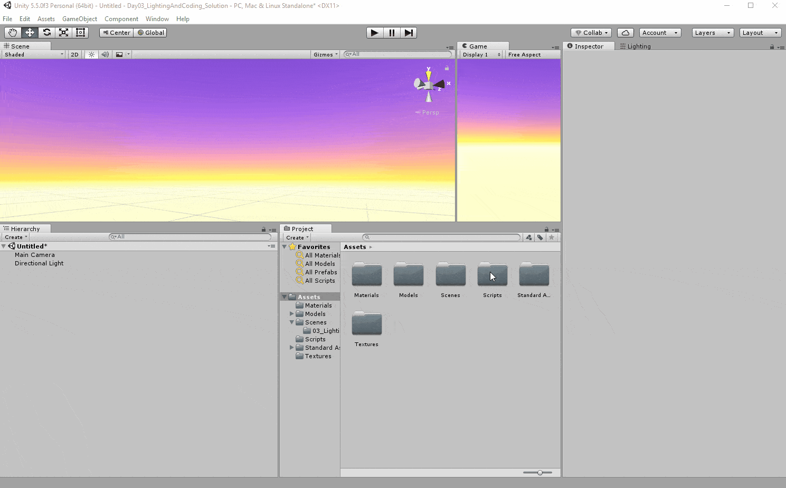

Unity & VS Code
Unity's default code editor (MonoDevelop) is okay, but is buggy and annoying to use. This semester, we are going to be using VS Code for coding. It's a free, modern, open source editor with all the bells and whistles.
Setup
- Make sure you have the latest version of Unity installed. (It needs to be 5.5 or higher.) You can check the version from
Help -> About Unity(Windows) orUnity -> About Unity(Mac). If you installed Unity during class, you are all set to go. - Make sure you have VS Code installed. You can get it here.
-
Open VS Code and install VS Code extensions. See the GIF below for how to install an extension. Search for and install:
- C#
- Debugger for Unity
- (optional) Material-theme

- If you are on Mac, download and install Mono. This will allow you to compile C# code.
- Set Unity to open scripts with VS Code. Go the preferences (
Edit -> Preferences...on Windows,Unity -> Preferences...on Mac). Click on theExternal Toolsmenu. From there, set theExternal Script Editorby clicking "Browse" and navigating to your VS Code exe (Windows) or application (Mac). See these GIFs:
Windows:
Mac:

Testing
Test your setup! Inside of any project, create a new script. Double click to open it in VS Code. VS Code may go through an extra C# installation process - wait for that to finish. When it's done, go into the Start function and start typing transform. or Debug., you should see some code suggestions pop up. If they do, you should be all set. Here's a GIF of that process and what the suggestions should look like:
